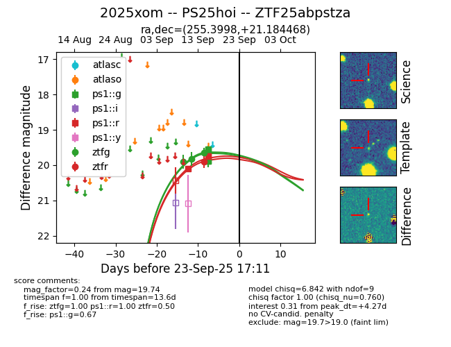
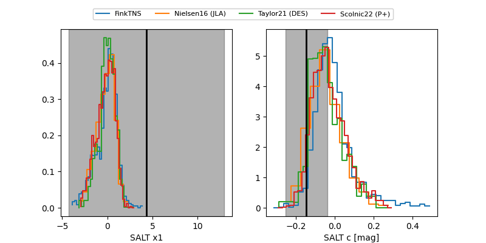

FINK: ZTF25abpstza
Lasair: ZTF25abpstza
ALeRCE: ZTF25abpstza
TNS: 2025xom
YSE: 2025xom
ZTF25abpstza (ztf,fink)
2025xom (tns,yse)
PS25hoi (panstarrs)
equatorial (ra, dec) = (255.3998,+21.18447)
galactic (l, b) = (41.5612,+33.19166)


last ps1::g=19.55, ps1::r=19.74, ztfg=19.65, ztfr=19.91
4 ps1::g, 3 ps1::r, 3 ztfg, 1 ztfr detections